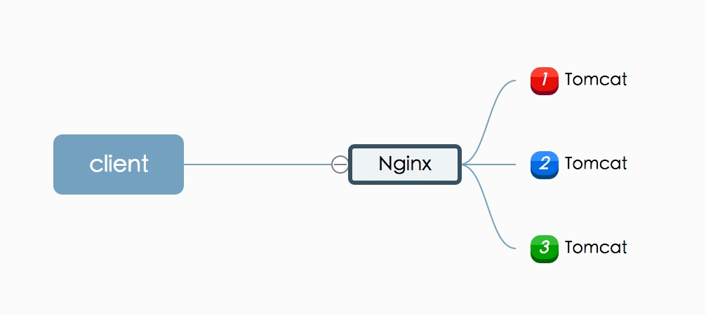

浅谈分布式架构
分布式架构单看这个名字给人的感觉就是高逼格，但其实从历史的角度来分析一下就比较明了了。

当业务量和用户量发展到一定地步的时候，这时一般会将应用同时部署到几台服务器上，在用户访问的时候使用Nginx进行反向代理和简单的负载均衡。
SOA服务化
当整个系统以及发展的足够大的时候，比如一个电商系统中存在有：
- 用户系统
- 订单系统
- 支付系统
- 物流系统
所以需要将整个项目拆分成若干个独立的应用，可以进行独立的开发上线实现快速迭代。
基于dubbo的实现
dubbo应该算是国内使用最多的分布式服务框架，基于此来实现对新入门的同学应该很有帮助。
其中有涉及到安装dubbo服务的注册中心zookeeper等相关知识点可以自行查看官方文档，这里就不单独讲了。
[]对外提供服务
首先第一步需要在SSM-API模块中定义一个接口，这里就搞了一个用户查询的接口
/*
\ Function:用户API
* @since JDK 1.7
*/
public interface UserInfoApi {
/**
\* 获取用户信息
\* @param userId
\* @return
\* @throws Exception
*/
public UserInfoRsp getUserInfo(int userId) throws Exception;
}
接着在SSM-SERVICE模块中进行实现：
import com.alibaba.dubbo.config.annotation.Service;
/*
\ Function:
* @since JDK 1.7
*/
@Service
public class UserInfoApiImpl implements UserInfoApi {
private static Logger logger = LoggerFactory.getLogger(UserInfoApiImpl.class);
@Autowired
private T\_userService t\_userService ;
/**
\* 获取用户信息
\* @param userId
\* @return
\* @throws Exception
*/
@Override
public UserInfoRsp getUserInfo(int userId) throws Exception {
logger.info("用户查询Id="+userId);
//返回对象
UserInfoRsp userInfoRsp = new UserInfoRsp() ;
T\_user t\_user = t_userService.selectByPrimaryKey(userId) ;
//构建
buildUserInfoRsp(userInfoRsp,t_user) ;
return userInfoRsp;
}
/**
\* 构建返回
\* @param userInfoRsp
\* @param t_user
*/
private void buildUserInfoRsp(UserInfoRsp userInfoRsp, T\_user t\_user) {
if (t_user == null){
t_user = new T_user() ;
}
CommonUtil.setLogValueModelToModel(t_user,userInfoRsp);
}
}
这些都是通用的代码，但值得注意的一点是这里使用的dubbo框架所提供的@service注解。作用是声明需要暴露的服务接口。
再之后就是几个dubbo相关的配置文件了。
spring-dubbo-config.xml
<dubbo:application name=”ssm-service” owner=”crossoverJie”
organization="ssm-crossoverJie" logger="slf4j"/>
<dubbo:registry id=”dubbo-registry” address=”zookeeper://192.168.0.188:2181”
file="/tmp/dubbo.cachr" />
<dubbo:monitor protocol=”registry” />
<dubbo:protocol name=”dubbo” port=”20880” />
<dubbo:provider timeout=”15000” retries=”0” delay=”-1” />
<dubbo:consumer check=”false” timeout=”15000” />
其实就是配置我们服务注册的zk地址，以及服务名称、超时时间等配置。
spring-dubbo-provider.xml
<dubbo:annotation package=”com.crossoverJie.api.impl” />
这个配置扫描注解包的位置，一般配置到接口实现包即可。
spring-dubbo-consumer.xml
这个是消费者配置项，表明我们需要依赖的其他应用。
这里我们在SSM-BOOT项目中进行配置：
<dubbo:reference id=”userInfoApi”
interface="com.crossoverJie.api.UserInfoApi" />
直接就是配置的刚才我们提供的那个用户查询的接口，这样当我们自己的内部项目需要使用到这个服务只需要依赖SSM-BOOT即可，不需要单独的再去配置consumer。这个我有在上一篇SSM(十) 项目重构-互联网项目的Maven结构中也有提到。
安装管理控制台
还有一个需要做的就是安装管理控制台，这里可以看到我们有多少服务、调用情况是怎么样等作用。
这里我们可以将dubbo的官方源码下载下来，对其中的dubbo-admin模块进行打包，将生成的WAR包放到Tomcat中运行起来即可。
但是需要注意一点的是：
需要将其中的dubbo.properties的zk地址修改为自己的即可。
dubbo.registry.address=zookeeper://127.0.0.1:2181
dubbo.admin.root.password=root
dubbo.admin.guest.password=guest
到时候登陆的话使用root，密码也是root。
使用guest，密码也是guest。
登陆界面如下图：
[![a2.jpg]
其中我们可以看到有两个服务以及注册上去了，但是没有消费者。
消费服务
其中在SSM-CONSUMER-API中我也定义了一个接口：
/*
\ Function:薪资API
* @since JDK 1.7
*/
public interface SalaryInfoApi {
/**
\* 获取薪资
\* @param userId
\* @return
\* @throws Exception
*/
public SalaryInfoRsp getSalaryInfo(int userId) throws Exception;
}
因为作为消费者的同时我们也对外提供了一个获取薪资的一个服务。
在SSM-CONSUMER-SERVICE模块中进行了实现：
/*
\ Function:
* @since JDK 1.7
*/
@Service
public class SalaryInfoApiImpl implements SalaryInfoApi {
private static Logger logger = LoggerFactory.getLogger(SalaryInfoApiImpl.class);
@Autowired
UserInfoApi userInfoApi ;
/**
\* 获取用户信息
\* @param userId
\* @return
\* @throws Exception
*/
@Override
public SalaryInfoRsp getSalaryInfo(int userId) throws Exception {
logger.info("薪资查询Id="+userId);
//返回对象
SalaryInfoRsp salaryInfoRsp = new SalaryInfoRsp() ;
//调用远程服务
UserInfoRsp userInfo = userInfoApi.getUserInfo(userId);
salaryInfoRsp.setUsername(userInfo.getUserName());
return salaryInfoRsp;
}
}
其中就可以直接使用userInfoApi调用之前的个人信息服务。
再调用之前需要注意的有点是，我们只需要依赖SSM-BOOT这个模块即可进行调用，因为SSM-BOOT模块已经为我们配置了消费者之类的操作了：
还有一点是在配置SSM-BOOT中的spring-dubbo-cosumer.xml配置文件的时候，路径要和我们初始化spring配置文件时的路径一致
<!-- Spring和mybatis的配置文件 –>
<param-name>contextConfigLocation</param-name>
<param-value>classpath*:spring/*.xml</param-value>
接下来跑个单测试一下能否调通：
/*
\ Function:
* @since JDK 1.7
/
@RunWith(SpringJUnit4ClassRunner.class)
@ContextConfiguration(locations = { “classpath:/spring/*.xml” })
public class SalaryInfoApiImplTest {
@Autowired
private SalaryInfoApi salaryInfoApi ;
@Test
public void getSalaryInfo() throws Exception {
SalaryInfoRsp salaryInfo = salaryInfoApi.getSalaryInfo(1);
System.out.println(JSON.toJSONString(salaryInfo));
}
}
接下来将消费者项目也同时启动在来观察管理控制台有什么不一样
会看到多了一个消费者所提供的服务com.crossoverjie.consumer.api.SalaryInfoApi,同时com.crossoverJie.api.UserInfoApi服务已经正常，说明已经有消费者了。
点进去便可查看具体的消费者。
总结
这样一个基于dubbo的分布式服务已经讲的差不多了，在实际的开发中我们便会开发一个大系统中的某一个子应用，这样就算一个子应用出问题了也不会影响到整个大的项目。
再提一点：
在实际的生产环境一般同一个服务我们都会有一个master,slave的主从服务，这样在上线的过程中不至于整个应用出现无法使用的尴尬情况。
谈到了SOA的好处，那么自然也有相对于传统模式的不方便之处：
- 拆分一个大的项目为成百上千的子应用就不可能手动上线了，即需要自动化的部署上线，如
Jenkins。 - 还有一个需要做到的就是监控，需要一个单独的监控平台来帮我们实时查看各个服务的运行情况以便于及时定位和解决问题。
- 日志查看分析，拆分之后不可能再去每台服务器上查看日志，需要一个单独的日志查看分析工具如
elk。
以上就是我理解的，如有差错欢迎指正。